Em um lindo dia de sol e com pouco vento, aconteceu, neste sábado (9) em Florianópolis a primeira etapa da Copa Catarinense de Remo. Com grande atuação de sua equipe, o Clube Náutico Francisco Martinelli foi o campeão geral da etapa após sete vitórias, em quinze provas, e vinte e duas medalhas.
A raia montada na Baía Sul, nas proximidades da Ponte Pedro Ivo, proporcionou aos remadores um dia excelente para a competição. Com ventos fracos de quadrante norte/nordeste a competição transcorreu com tranquilidade durante toda a manhã. Na primeira prova, Skiff Junior “A”, o atleta Paulo Gilvane, que recentemente foi convocado para a Seleção Brasileira, terminou em segundo, com Valmor dos Santos em 3º.
A primeira medalha de ouro do Martinelli veio no Double Skiff Peso Leve, com a dupla Anderson Feyh e Lucas Setubal. O Quatro Com Estreante rendeu ao Clube mais duas medalhas, uma prata e um bronze. Já no Four Skiff Juvenil mais um ouro para o quarteto do Francisco Martinelli.
Na Prova de Skiff Classe Aberta Ricardo Muhle travou um duelo acirrado com Alexandre Soares, do Riachuelo, e acabou na segunda posição por uma diferença muito pequena. No Double Skiff Estreante mais uma prata para os remadores do Martinelli, com a dupla Vanessa Helário e Ana Carolina Oliveira. Na prova de Canoe 13 Anos, Eduardo Martins foi 3º, enquanto Larissa Oliveira conquistou o segundo lugar no Skiff Júnior “B”.
No Four Skiff Júnior “B” ouro e bronze para os quartetos do Martinelli. No Skiff Júnior “A” Feminino, dobradinha para as remadoras do Clube. Aline Andreussi ficou com a medalha de ouro e Jade Costa terminou com a prata. No Canoe 14 Anos Feminino, Rafaela Guedes encerrou a prova na 2ª posição seguida de Anasthacia Marafigo, 3ª.
Na prova de Dois Sem Júnior “B”, Mateus Sampaio e Yuri Bianchi foram os grandes vencedores. Completando o programa de provas, as duplas de Double Skiff Classe Aberta do Martinelli deram show com primeiro, segundo e terceiro lugares. Já na última prova do dia, o Oito Com Classe Aberta, ouro e bronze para encerrar o dia com mais uma conquista.
A próxima etapa da Copa Catarinense acontece novamente em Florianópolis, no dia 04 de julho, e a terceira será em Blumenau, no dia 28 de agosto.
Medalhas do Clube Náutico Francisco Martinelli
Ouro:
Double Skiff Peso Leve – Anderson Feyh e Lucas Setubal
Four Skiff Juvenil – Jefferson da Silva, Luigi Alcoforado, Vagner de Souza e Felipe Costa
Four Skiff Sênior “B” – Guilherme Vieira, Lucas Setubal, Ariel Mendes e Alcydes Silva
Skiff Júnior “A” Feminino – Aline Andreussi
Dois Sem Júnior “B” – Mateus Sampaio e Yuri Bianchi
Double Skiff Aberta Feminino – Rebeca Reginaldo e Adriana Vilela
Oito Com Timoneiro – Marco Martins, Ricardo Muhle, Guilherme Vieira, Lucas Setubal, Ariel Mendes, Alcydes Silva, Paulo Gilvane e Anderson Feyh; Timoneiro: Antonio Wundervald
Prata:
Single Skiff Júnior “A” – Paulo Gilvane
Quatro Com Estreante – Eric Martins, Vinicius Rocha, Arthur Gonçalves e Yuri Bianchi; Timoneiro: Antonio Wundervald
Single Skiff Aberta – Ricardo Muhle
Double Skiff Estreante Feminino – Vanessa Helário e Ana Carolina Oliveira
Skiff Júnior “B” Feminino – Larissa Silva
Skiff Júnior “A” Feminino – Jade Costa
Canoe 14 Anos Feminino – Rafaela Guedes
Double Skiff Aberta Feminino – Jade Costa e Talita Marin
Bronze:
Single Skiff Júnior “A” – Valmor Neto
Quatro Com Estreante – Leonardo José, Pedro Speck, Vinicius Almeida e Israel Cardenuto; Timoneiro: Peterson Malinoski
Canoe 13 Anos Masculino – Eduardo Martins
Four Skiff Sênior “B” – Ian Dannapel, Jorge Rodrigues, Jonathan Silva, Alex Mendes
Canoe 14 Anos Feminino – Anasthacia Marafigo
Double Skiff Aberta Feminino – Khauany Silveira e Gabriela Souza
Oito Com Timoneiro – Eduardo Vieira, Pedro Etges, Ian Dannapel, Jorge Rodriguez, Jonathan Silva, Emmanuel Buchele, Moacir da Silva e Edson Santos; Timoneiro: Felipe Costa
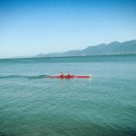 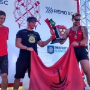 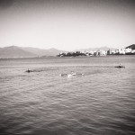 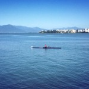 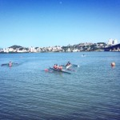 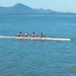 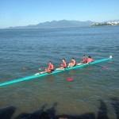 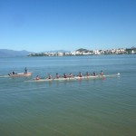 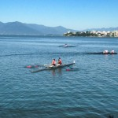 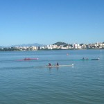 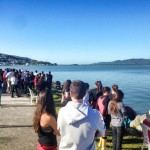 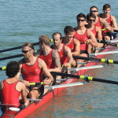 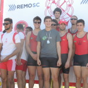 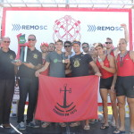